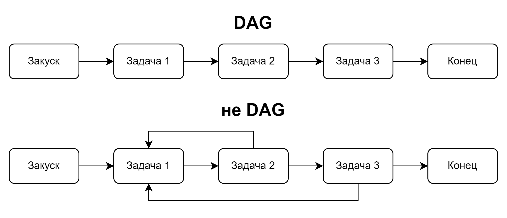
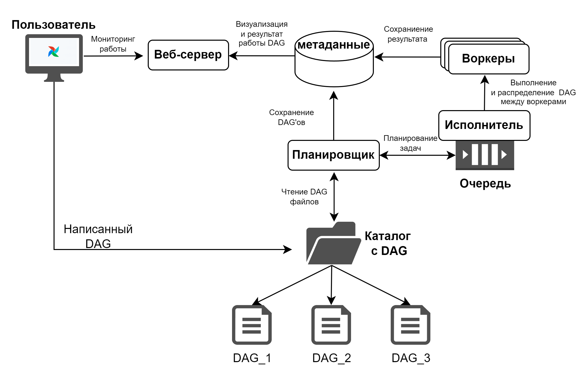

Куратор раздела

Шустиков Владимир, оставивший военную жизнь позади и ушедший в данные с головой. Работаю с данными более 2х лет и останавливаться не собираюсь! Веду:
Если хочешь сменить текущую профессию на Дата Инженера — пиши не стесняйся, я сам проходил этот не легкий путь и тебе помогу https://t.me/ShustDE.
Хочешь улучшить текущий раздел, внести недостающее или поправить формулировку? Предлагай PR и тегай @ShustGF.
Напутственные слова перед изучением материала
!!!Сюда стоит лезть, после изучения курсов и статей по Python, SQL, Docker, Командной строки Linux!!!
Данная статья охватывает основы работы с оркестратором AirFlow. Рассмотрим кратко теорию, которую спрашивают достаточно часто, а так же посмотрим, как локально развернуть AirFlow с помощью docker-compose в простом примере одного из тестовых заданий по AirFlow.
Как говорил мой дед: "Я твой дед!". Вы можете спросить, "А к чему ты это написал?", а я вам отвечу "Хз. Живите теперь с этим!"
Если после прочтения статьи, вы захотите погрузиться в AirFlow глубже, то могу порекомендовать книгу "Apache Airflow и конвейеры обработки данных". В ней описывается работа с AirFlow достаточно подробно на примерах.
Приятного погружения.
AIRFLOW
Возьмём определение с официального репозитория AirFlow.
AirFlow — это платформа для программирования, планирования и мониторинга рабочих процессов.
А в общем и целом нужно запомнить, что AirFlow это оркестратор (не ELT-инструмент), в котором есть возможность прописывать ETL процессы, на языке Python. Каждый такой процесс представляет собой DAG, состоящий из определённых задач.

DAG
DAG(Directed Acyclic Graph, направленный ациклический граф) представлет из себя набор тАсок(задач), идущих последовательно друг за дружкой, либо параллельно, которые нельзя зациклить по кругу, т.е. своего рода строится прямолинейный конвеер обработки данных.

Архитектура AirFlow
AirFlow состоит из четырёх основных, взаимосвязанных компонентов:
- Планировщик AirFlow(Scheduler)
- Исполнитель(Executor)
- Воркеры (Workers)
- Веб-сервер AirFlow

Задачи планировщика
- Анализ графа;
- Проверка параметра scheduler_interval, который определяет частоту выполнения DAG;
- Планирование очереди графов.
Задачи Исполнителя
- Запуск задач;
- Распеделение задач между воркерами.
Задачи воркеров
- Получает задачи от исполнителя;
- Отвечает за полное выполнение задач.
Задачи Веб-сервера AirFlow
- Визуализация DAG'а, который проанализировал планировщик;
- Предоставлять интерфейс пользователю для отслеживания работы DAG.
Инициализация DAG и его основные параметры
В Python-файле DAG инициализируется очень просто, необходимо импортировать класс DAG из библиотки AirFlow:
И далее создать экземпляр объекта. Обычно переменную экземпляра принято называть dag.
Именно этот экземпляр класса передаёются в дальнейшем каждому оператору, так оператор понимает, что принадлежит именно этому экземпляру.
Свойства экземпляра DAG
У экземпляра DAG есть большое количество свойств, но остановлюсь я только на 3х, постоянно встречающихся в каждом DAG-экземпляре
- dag_id — идентификатор DAG. Именно этот идентификатор проставляется в имени DAG на главной странице Airflow.
- start_date — задается дата и время начала планирования запусков DAG. Обычно для задания даты используется библиотека datetime.
import datetime as dt
dag = DAG(
dag_id = "load_file_to_psql"
start_date = dt.datetime(2024, 11, 13)
...
)
- schedule_interval — планируемое время запуска DAG.
import datetime as dt
dag = DAG(
dag_id = "load_file_to_psql"
start_date = dt.datetime(2024, 11, 13)
schedule_interval = dt.timedelta(days=5) # раз в 5 дней, т.е. 13, 18, 23 и т.д.
...
)
В schedule_interval есть несколько способов задать время запуска. Ради примера в скобках будет указан ежедневный интервал.
- CRON — о нём во всех подробностях описано здесь. (schedule_interval = '0 0 * * *')
- timedelta — из библиотеки datetime (schedule_interval = dt.timedelta(days=5))
- макросы (schedule_interval = '@daily')
| Макрос | Значение |
|---|---|
| @once | Один и только один раз |
| @hourly | Запуск один раз в час в начале часа |
| @daily | Запуск один раз в день в полночь |
| @weekly | Запуск один раз в неделю в полночь в воскресенье утром |
| @monthly | Запуск один раз в месяц в полночь первого числа месяца |
| @yearly | Запуск один раз в год в полночь 1 января |
Если мы хотим запускать DAG вручную, то необходимо прописать значение None (schedule_interval = None)
Операторы AirFlow
Как вам уже известно, конвеер обработки является направленным ацикличным графом, в свою очередь DAG состоит из определённых задач, которые определяются операторами.
В AirFlow существует множество операторов, с их полным списком можно ознакомиться здесь
Вот примеры часто встречаемых операторов, с которыми мы познакомимся в примере ниже:
- PythonOperator
- BashOperator
- PostgresOperator
Думаю, из названия и так понятно, для чего они нужны. Так что тут без комментариев
Передача данных между задачами.
Существует 2 метода передачи данных между тасками в AirFlow:
- Механизм XCom;
- Сохранение данных в хранилищах.
Механизм XCom
XCom - позволяет обмениваться сообщениями между задачами. Предназначен он исключительно для небольших данных.
Согласно документации в зависимости от используемой базы данных метаинформации:
- SQLite - до 2х Гб.
- PostgreSQL - до 1 Гб.
- MySQL - до 64 Кб.
!!!Запомните!!! XCom можно использовать для передачи небольших объемов данных, например, значение агрегации, количества строк в файле, даже можно небольшой файл передать, но в остальных случаях используйте внешние решения для хранения данных, как пример, сохраняйте все в каталог tmp и потом забирайте данные оттуда.
Определяется Xcom 2мя способами:
- с помощью команд xcom_push и xcom_pull(с этим методом мы познакомимся в примере)
- с помощью Taskflow API (декоратор @task, вот хорошая статься с примером)
Пример тестового задания
Необходимо написать DAG, который будет выполнять следующие задачи:
``` 1. С помощью PythonOperator необходимо сгенерировать тестовые данные и записать их в файл в каталог /tmp/data.csv ( для простоты можно взять 2 колонки - id, value ) 2. С помощью BashOperator переместить файл в каталог /tmp/processed_data 3. C помощью PythonOperator нужно загрузить данные из файла в таблицу в Postgres ( таблицу можно предварительно создать ) 4. После записи данных в таблицу последним таском выведите в логах сообщение о количестве загруженных данных. С помощью XCom необходимо: Передать путь до файла из п.1 в оператор в п.2. Передать количество записей из п.3 в п.4
### Запуск DAG'а
Для начала развернём с помощью Docker Compose, **AirFlow**.
Жми и копируй [docker-compose.yaml](./task/docker-compose.yaml) в свой каталог.
С помощью WSL или любой командной строки, где ты работаешь с Docker, переходишь в каталог со скаченным или скопированным файлом и выполняешь команду:
Пока у тебя качаются и поднимаются контейнеры, скачай следующий файл [test_task.py](./task/test_task.py)
После того, как контейнеры поднимутся, в каталоге с **docker-compose.yaml** появятся 4 каталога config, dags, logs, plugins.
Необходимо скаченный файл **test_task.py** переместить в каталог **dags**.
Теперь заходим в браузер и в URL-строке прописываем:
Тем самым переходим на стартовую страницу.
<p align="center">
<img src="./../png/af_start_page.png" alt="AirFlow" />
</p>
После входа нас перебрасывает на главную страницу, где мы увидим DAG, который мы скинули в каталог(если его там нет, подождите минут 5 и обновите страницу, в крайнем случае рестартаните Docker Compose)
Перед тем, как запустить DAG, необходимо прописать коннект к БД PostgreSQL, которая присутствует в Docker Compose файле.
Для это в верхней строке меню наводим курсор на **Admin** и выбираетм пункт **Connections**. Нажимаем синий плюсик в открывшимся окне подключения, прописываем следующие параметры:
|Параметр| Значение|
|---|---|
|Connection Id|psql_connection|
|Connection Type|Postgres|
|Host|host.docker.internal|
|Database|user|
|Login|user|
|Password|user|
|Port|5431|
|Extra|могут быть кавычки, необходимо оставить пустое поле, иначе будет ошибка подключения.|
<p align="center">
<img src="./../png/af_connection.png" alt="AirFlow" />
</p>
Нажимаем Save
Возвращаемся на главную страницу и заходим в наш DAG, жамкув по его имени.
Далее запускаем DAG, нажав на **Trigger DAG**(треугольник) в правом верхнем углу страницы.
Всё поздавляю, вы запустили свой первый DAG, теперь разберёмся с кодом, написанным в DAG'е.
### Поясняю за код
Для начала необходимо инициализировать DAG с помощью класса DAG, для этого импортируем класс из библиотеки airflow.
Чтобы не захламлять сам класс DAG, аргументы можно передать через параметр **default_args** и объявить словарь с параметрами отдельно.
Далее берём первый пунт задания. Для генерации файла я использую библиотеку **pandas**. Следующий код генерирует данные и сохраняет их в файл.
path_filename = '/tmp/data.csv' table = [(i, md5(int(i).to_bytes(8, 'big', signed=True)).hexdigest()) for i in range(1, 100)] table = pd.DataFrame(table, columns=['id', 'md5_id']) table.to_csv(path_filename, index=False)
Помещаем данный фрагмент в функцию **_generate_file**. Но не забываем, что путь к файлу нам необходимо передать через XCom. Поэтому необходимо в функцию передать все аргументы DAG'а, т.е. переменную **kwargs**. Из данного словаря нам нужен ключ **ti** (или task_instans, это одно и тоже, ссылка на один и тот же объект). Поэтому приравниваем его к переменной **ti**, чтобы не запутаться.
Как можно заметить, так как нам нужно достать путь к файлу из XCom в Bash-конструкцию, мы воспользовались Jinja-шаблонизатором для языка Python.
Для пункта 3 изначально создается таблица с помощью оператора PostgresOperator в конструкции:
Думаю, тут и так все понятно и комментарии излишни. А если ты не знаешь, что делает SQL код, то какого лешего ты тут забыл, иди учи SQL!
Для загрузки данных используется следующий код:
Но так как у нас есть дополнительное условие, а именно в XCom переменную положить количество строк в файл, то опять обращаемся к **ti**.
Теперь необходимо вывести просто количество строк, делаем все тоже самое, как и при переносе файла. За это отвечается конструкция:
Чтобы посмотреть результат последнего пункта, во вкладке graph выдели последнюю зелёную таску (print_count_string_in_df), и появятся дополнительные вкладки. Перейдите во вкладку Logs, и вы увидите запись, представленную на скриншоте.